Challenge 7: "WOW"
This challenge presents us a windows executable named WorldOfWarcraft. The first thing I will typically do when given a new executable is load it into a few static analysis tools. PEstudio, Detect it easy(Die), and CFF Explorer are easy first options and we can take note of how the software was written/compiled, any interesting API calls, and any interesting strings. In this case we have a few API calls that we will want to look into and a few strings that we can use to pivot off of. There is also an export that we should be very interested in. It's not normal for an executable to have an export.
API's:
CreateFileA
ReadFile
STRINGS:
%s@FLARE-On.com
n1ght_4lve$_R_c00L.bin
A_l1ttl3_P1C_0f_h3aV3n
?X64Call@@YG_KPAX@Z
EXPORT:
unsigned __int64 __stdcall X64Call(void*)
The strings 'n1ght_4lve$_R_c00L.bin' and 'A_l1ttl3_P1C_0f_h3aV3n' are the most interesting at first. We can load the executable up in IDA and do an xref(hotkey: x) search for where both of these strings are used. Both strings are used near each other and there is some interesting code surrounding both. A number of hex digits that are not all printable ASCII characters being pushed onto the stack and our string 'n1ght_4lve$_R_c00L.bin' being pushed as an argument to sub_1001910.
A quick scan of sub_1001910 makes it obvious what its there to do. This function simply takes in a file name, loads the contents of the file onto the heap, then loads the content off the heap and into an argument location which is on the stack. This allows us to name the function within IDA. I'm going to name it 'read_file_by_name'
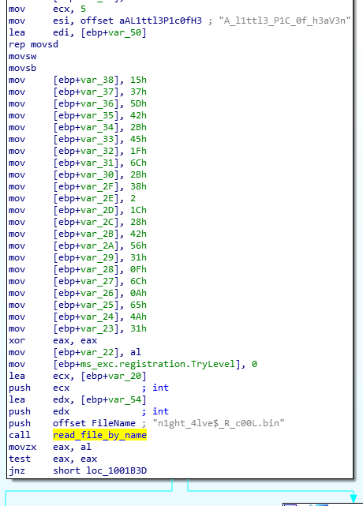
interesting strings and read file function
Now we just need to follow the data and see what is done with the few strings and bits of data that we have found. Just below the call to 'read_file_by_name' there are 2 loops that likely iterate over our data. Right after the second loop is a push of the string '%s@FLARE-On.com' onto the stack as an argument to the call to printf. This looks promising.
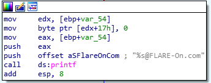
print decrypted answer
Having analyzed our function 'read_file_by_name', we know that the data is stored into the location pointed to by var_54. So we might as well rename that. I'll name it 'night_bin_data'. Then we know that our unprintable stack string starts at var_38, and that it is used once at the end of the second while loop. I guess i'll just name that 'stack_string'. The last is the location of our string 'A_l1ttl3_P1C_0f_h3aV3n'. IDA named that var_50, but i want it to be named 'heavan_string'. This will help us analyze the while loops.
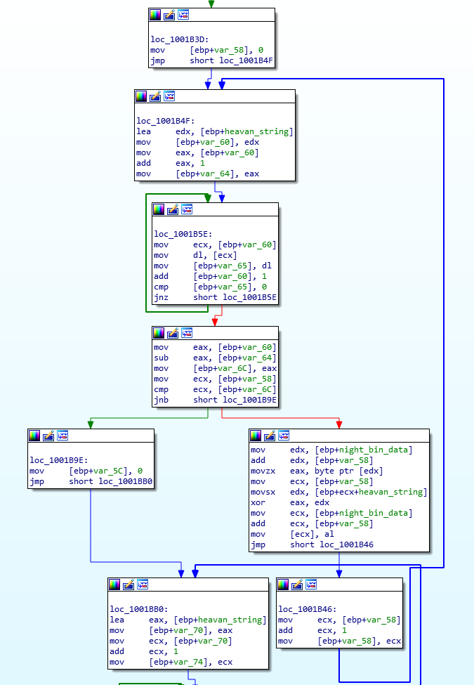
encrypting input to compare
Excellent! The first thing to notice is the 'xor eax,edx'. Any XOR with two different registers is likely interesting. in this case, we see that in each loop 'edx' gets set to a character in our heavan_string, and 'eax' get set to a character from night_bin_data, then the result is saved back into night_bin_data. At this point we dont know what night_bin_data is supposed to be. I want to know what happens to night_bin_data after our first while loop. If we follow this variable, the next time it is used is when it is compared to 'stack_string' in our second while loop. We can just XOR our stack string against 'A_l1ttl3_P1C_0f_h3aV3n' and get our answer. Lets do that in
CyberChef.
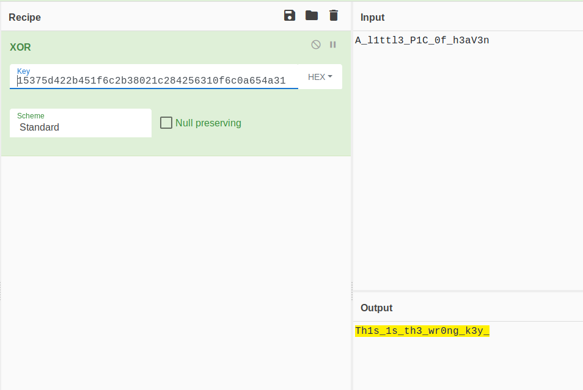
wrongkey.exe
"Th1s_1s_th3_wr0ng_k3y_"
Oh this was a Red Herring... and not where we need to be.
We're not done though. We still haven't even run the challenge and there is still the export to look at.
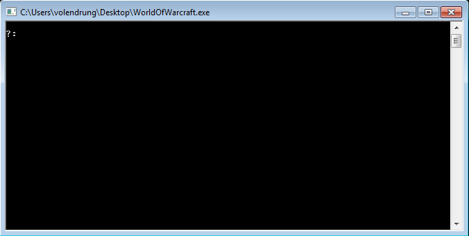
running the program for the first time
This console will fail if you input letters, but if you put numbers in, it will continue to prompt for more, then print out some garbage text that is possibly supposed to be the flag. Since we dont see our '?:' string anywhere in IDA, we're not sure where it is coming from to know where the code is. There also aren't any 'scanf' or similar calls that would accept input at the console.
X64Call has an odd call(call $+5) then soon after IDA's analysis breaks. We can assume by the name, that X64Call plans to call some 64 bit code or process. We can xref X64call, and find function sub_1001740 calling it after it runs a loop containing an xor, which appears to deobfuscate something placed into memory previously against an argument provided, then pass that as an argument to X64call. Another xref will show that the value of this argument is always '0x0deedeeb'.
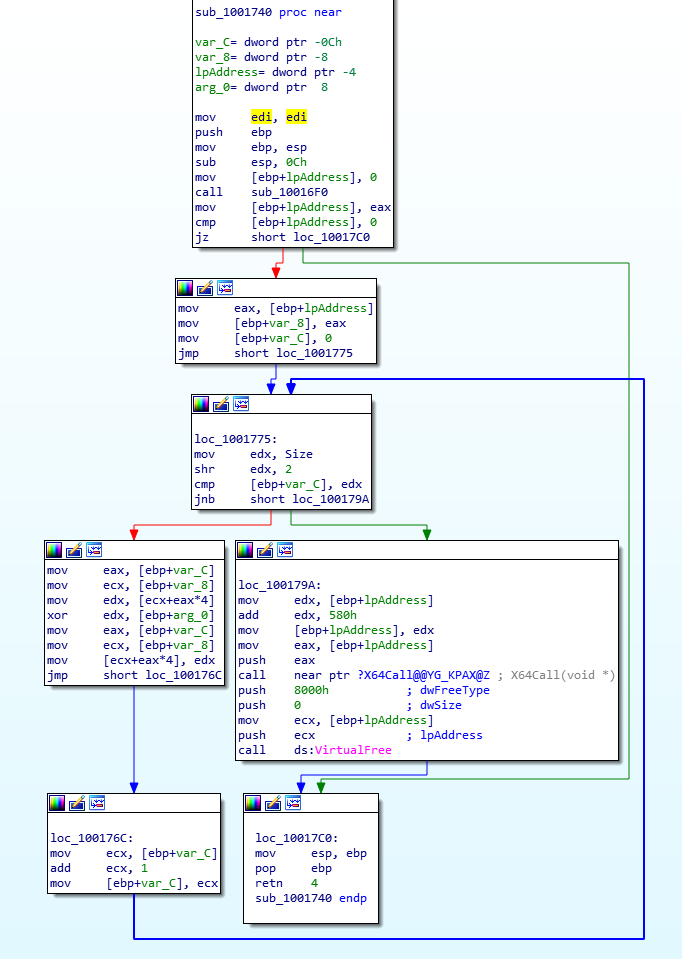
dll decryptor
If we step into our debugger and set a breakpoint right before the call to X64Call we can view the memory region and see what was deobfuscated.
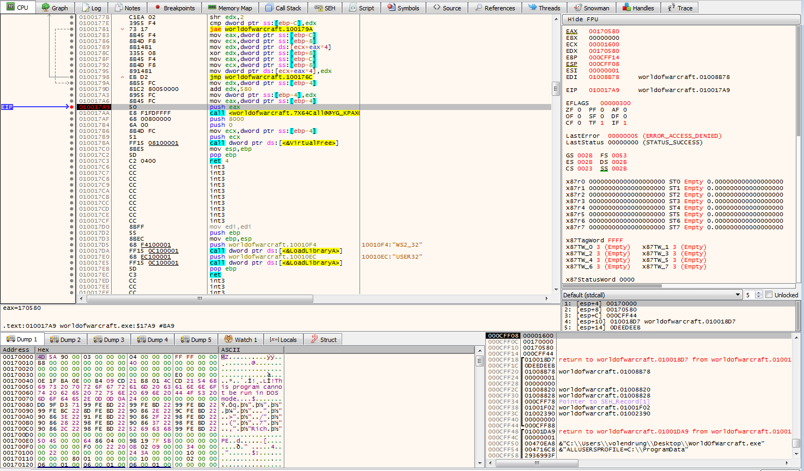
confirming its a dll
'MZ' magic number means this is a DLL being loaded. With EAX being set to offset 0x580, this is likely our entry point. We can dump this and load it into IDA to see what its doing. Those who try to continue in the debugger such as x32dbg may notice 2 things.
- That there is extra code in X64Call that was not visible in IDA's graph view. The code is still visible but only in IDAs linear view.
- That the debugger dies when you try to get into the loaded dll. This is true for Olly and x32dbg. I found success using Radare2 and i believe windbg would have been successful as well.
The first is a concept that i didn't understand while attempting this challenge called
Heavens Gate where you break out of the 32 bit process and jump into the 64 bit 'heaven' area of the process. This heaven area is a result of Windows running 32 bit processes within a 64 bit 'shell'. The greater name for this technology is called
Windows on Windows, hence the WOW challenge name and the WorldofWarcraft executable name.
Back to the extracted dll. Just in opening it in IDA, and selecting our first function, we see some interesting strings. 'NtQueryInformationProcess', 'NtCreateThread', 'RtlGetVersion', and 'NtDeviceIoControlFile'. These are all strings rather than API calls directly. They'll likely still be called but in a different place. Since these strings are all arguments to sub_180001cd0, we can probably figure these API functions get loaded or called within sub_180001cd0. We can come back to these later though.
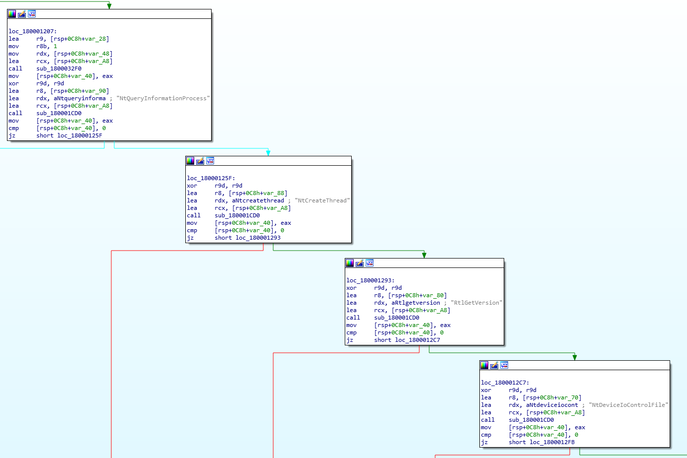
dll interesting strings
Viewing strings for this dll gives some information about another embedded DLL named crackme.dll which starts at 0x180005130. For the sake of cleanliness, i chose to dump this to another file to be analyzed individually.
Again viewing strings, crackme.dll seems to have the most interesting strings we've seen yet. 'WSAStartup', 'htons', 'inet_addr', 'closesocket', 'recv', 'send', 'connect', and 'socket' all relate to opening and interacting with a socket. '127.0.0.1' is our IP to connect to, and we see the '?:' which we recognize as our prompt text from earlier. it is also interesting that we see 'ZwDeviceIoControlFile' referenced within these strings as well. Searching for where these strings are used leads you to a table with multiple calls to GetProcAddress. This is searching for the location of these functions within our parent process and returning them.
We've found our '?:' prompt text, so we likely have our input code very near. Searching the Imports lets us find the 'printf' which prints our prompt, and the 'scanf' which accepts our input. We can xref to go to the call that uses these functions.
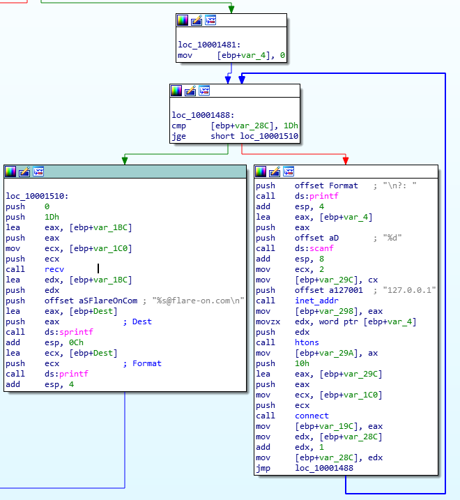
found our prompt and accepting of input
We've found the loop that gives our prompt and accepts our input. I've renamed the calls to the name of the functions that were loaded into the locations being called. We can see that the number we give to the prompt is used as a port for the program to connect to. This loop runs 0x1D(decimal 29) times meaning we will have 29 inputs before our flag is printed.
When I analyzed this the first time, I tried setting up a listener in both netcat and python so that i could capture the connection and give it some data to recv. I was very confused when i could never get the challenge to connect to my listeners. I had done some research on
NtDeviceIoControlFile when i first saw it being loaded but hadn't analyzed it further. It was only after i couldnt capture the connections that i figured the program was intercepting the 'connect' and 'recv' calls and sending them to some funtion inside the program.
The quickest thing to do is search all functions for interesting code that could be the function that ZwDeviceIoControlFile has redirected 'connect' and 'recv' to. sub_180001660 within our first embedded DLL(just after Heavans Gate) has some somewhat obvious deobfuscation code. It even loops 29 times, and the data that it references at 'unk_180006b40' and 'unk_180006bb8' are both 29 values long which is the same number of input numbers that we give the program. A quick breakpoint set just before the loop in Radare2 confirms this code is run when we input a port number.
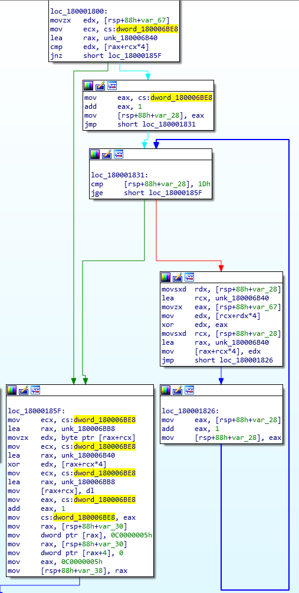
loop which decrypts our flag
Now lets analyze this code.
To enter the loop, var_67 must equal whatever value is in ('unk_180006b40' + 'dword_180006be8' * 4). We can watch 'dword_180006be8' in our debugger to see that it is used as a counter that increments every time you input a number. Viewing var_67 in our debugger shows that it is equal to the value of our input. So whatever is in 'unk_180006b40' is the correct answers to our port numbers. It is then multiplied by 4 because the values within 'unk_180006b40' are not right next to eachother, they are 4 bytes apart with 0's in between.
The loop has an XOR and will run 29 times. This loop iterates over every value in 'unk_18006b40' XOR'ing it with your input(in var_67). Then it will save the result back into 'unk_18006b40'.
Then there is a second/lower block of code that runs whether your input is correct or not. This block XOR's single values from 'unk_180006bb8' and 'unk_18006b40'. The result of this XOR is saved back into 'unk_180006bb8'. Since 'unk_180006bb8' is being overwritten with the result of our XOR, this is likely the data being decrypted. 'unk_180006b40' not being changed within this second/lower block hints that it is the key to the XOR decryption.
unk_180006b40 = 0F, 57, 61, 77, B, FA, B5, D1, 81, 99, AC, A7, 90, 58, 1A, 52, C, A0, 8, 2D, ED, D5, 6D, E7, E0, F2, BC, E9, F2
unk_180006bb8 = 5F, 68, 44, 62, 23, BA, 21, 54, 33, 73, 4, 65, 50, 97, 72, 26, 1, C4, CD, 11, B6, Bh, D6, F9, 58, 76, 7E, 65, 69
So what we appear to have is an answer array which is also used to decrypt the flag and every time you enter a correct number, it will XOR the answer/key array with the number that you input. THIS! is reversible. Since the first value has to be correct for the loop to be entered the first time, we can right code that takes the first value and XOR's the whole array by it. After the first loop through the array, the second value will now be correct, which lets us use that to continue XOR'ing the array. Lets implement this in python.
#!/usr/bin/python3
answer_array = [0xF,0x57,0x61,0x77,0xB,0xFA,0xB5,0xD1,0x81,0x99,0xAC,0xA7,0x90,0x58,0x1A,0x52,0xC,0xA0,0x8,0x2D,0xED,0xD5,0x6D,0xE7,0xE0,0xF2,0xBC,0xE9,0xF2]
for a in range(0,len(answer_array)):
for b in range(a,len(answer_array)-1):
answer_array[b+1] = answer_array[b+1] ^ answer_array[a]
print(answer_array)
This gives us the array
[15,88,54,22,124,241,79,100,80,24,53,11,55,200,66,72,94,172,168,37,192,56,184,138,7,18,78,85,27].
Now we just have to enter these in as our ports.
VIOLA! Answer:
P0rt_Kn0ck1ng_0n_he4v3ns_d00r@flare-on.com. The
official solution goes into far more detail about how to break out of the 32 bit process and into the 64 bit, as well as how this program hooked the connect and recv functionality to have it redirect to an internal function. Its written well and worth the read.
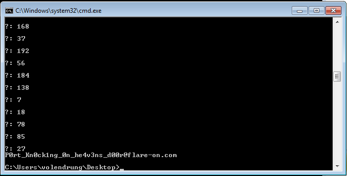
Flag